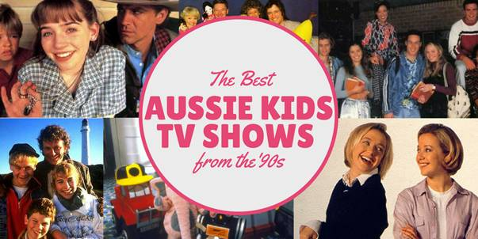

The ABC and Children's Programming - The Highs, Lows and Power-plays

The promise of the early years
When ABC television first aired, on November 5, 1956, children's programs presented a dilemma. There was no Australian film production industry, and video tape was yet to be invented. The highly successful radio program The Argonauts was not suited to visual adaptation so the public broadcaster settled on a studio-based Children's TV Club, featuring paintings, photography and puppets. The program could not compete with The Happy Show and The Tarax Show on the commercial stations which lured children with giveaways. But Mr Squiggle did. A puppet with a pencil for a nose made drawings out of squiggly lines sent in by young viewers, and developed as an imaginative and successful children's entertainment screened on the ABC for a quarter of a century.
During the first two television decades the ABC excelled with its educational programs, and by the mid-seventies more than 80 percent of schools carried ABC broadcasts. Adventure Island, for 3-9 year olds, produced by an independent production house, was also a creative and engaging program airing from 1967 to 1972.
Play School began its life on the BBC in 1964 and was sold to Australia, Canada and New Zealand before production began locally in July 1966. The BBC kept a proprietorial eye on its progeny and their producers claimed then (and the Australian producers have consistently claimed since) that they held the holy-grail for pre-schoolers. However the program derives from an English middle-class model for conforming children, which does not challenge their thinking. Although it is now lauded as an icon, the tenacity with which the Play School team have defended their enterprise has undermined the potential of ABC children's programming and production in Australia for decades. What we have learned about child development in more than fifty years has gone largely ignored by the program.
The first major dispute came in 1971 when the ABC purchased Sesame Street, a thoroughly researched and engaging program designed to help teach American disadvantaged children basic language and number concepts and stimulate their imaginations. There was vitriolic protest from the Play School education team which claimed Sesame Street would undermine the language development of Australian children and shorten their attention spans. Play School's BBC producer became the public face of a vigorous campaign to oppose the purchase. But fortunately, Play School lost this round and Sesame Street went to air on the ABC bringing some diversity and a creative program to young viewers.
Part of the reason for the emotional blood feud that has been generated over program purchases has been the tug-of-war between in-house producers and the independent production industry. The former can make programs without regard to the viewers they might attract, whereas the independents are more market driven. Both compete for a share of the budget.
In 1987 Paddy Conroy, who had been Head of ABC Children's Programs, became Head of Television under David Hill as Managing Director. He had insight into the workings of the children's area and thought the department and its educational programs had become moribund. With the exception of Behind the News, the education programs had lost appeal and were no longer used widely in schools. With his new authority, Conroy set out to refresh ABC programming generally. He wanted to shake up in-house production, flush out tired entrenched staff, bring in independent productions, but also generate revenue for the broadcaster which was always under siege from both sides of politics.
The ABC Board's policy at the time was to reduce in-house production and work more with the independent sector to reduce overheads. Conroy axed funding for the Schools' Service, and appointed Nick Collis-George to reform the department. Collis-George, a tough-minded union man was briefed by Conroy to sack those resisting change, encourage independent production, look into merchandising Play School, and generally change the profile of children's television on the ABC.
The Australian Children's Television Foundation, set up in 1982, was the obvious choice for the ABC to work with in order to become the leading producer of children's programs. As Director of the ACTF, I welcomed the partnership. Conroy put in place an output deal with the ACTF which enabled the development of first class drama series by the Foundation, secure in the knowledge there was a guaranteed broadcaster in place, with respect for the product and a mutual interest in its success.
This partnership helped raise the profile of Australian children's programs. Both domestically and internationally, the production industry flourished off the back of the reputation of successful programs, which included Touch the Sun, the Bi- Centennial feature film series made in each State, including the Emmy award-winning Captain Johnno . Through the output deal, the ABC acquired Winners and Round the Twist from the commercial networks and both these shows went into further series. In 1994, the International Year of the Family, the ABC and ACTF launched Family Album which went to air at 6.00 pm each Saturday night throughout the year as a celebration of family life, allowing families to share viewing in prime time.
Play School declares war on diversity
The Play School team was unhappy about the partnership between the ABC and the ACTF and when Conroy decided to buy Lift Off, a program for three to eight-year-olds, the animosity burst forth like lava from a volcano. He was interested in diversity and in the development of a sustainable, independent, Australian production which would fill a gap in the market and balance imported programming. Conroy wanted to go beyond Play School which he considered out-dated. The BBC had cancelled their Play School in 1988 to progress new ideas. Canada had followed, as did New Zealand.
In February 1991, when the ABC Board was considering funding Lift-Off, the schools faction began a strident campaign. Alan Kendall, for seventeen years an executive producer in the Early Childhood Unit which oversaw the production of Play School, wrote a thirty-page report to the Board passionately defending Play School and condemning the principles expressed in the Lift-Off document on philosophy and objectives.
Kendall claimed that the ACTF had no idea what it was doing by targeting the three-to eight-year-old audience within one program. He claimed that the Lift-Off approach was 'doctrinaire' and would threaten the security of three-to-four-year-olds, creating 'jagged attention patterns like Sesame Street'. With evangelical fervour, Kendall extolled the virtues of Play School as 'the only program in the world which understood how to reach young children directly through its on-air presenter'. 'More than anything else,' he said, 'the Lift-Off proposal is an attack on the medium of television … I am alarmed at the possibility that the same corrosion of television values in the children's field could begin to happen within the ABC itself.' 1
In a more virulent form, this was a reprise of the attack the Play School team had made on Sesame Street twenty years earlier. Collis-George wrote to me seeking urgent comments on the paper. I declined this invitation because the central issue Kendall was addressing was not in contention. Lift-Off was not an attempt to compete with Play School. It was unnecessary to denigrate one program to preserve the other. They targeted different demographics and it was a shocking fact that twenty years had gone by with no thought given by the ABC to the development of a new major Australian program for early childhood.
Kendall also missed the point that it was time the schools, the community and the broadcasters worked together in a concerted way for children. Technology was evolving. The distinctions between film, television, video, audio tapes and publishing were breaking down and programming needed to use the potential offered to educate children. Kendall reflected the difference between the old child development views of the clinical psychologist Jean Piaget - who when working in the 1930's theorised there were fixed stages in child development - and Harvard University Professor Howard Gardner, who is regarded as the foremost thinker in developmental psychology in the US, and did the seminal work on multiple intelligences. 2
Gardner's evaluation of the Lift Off program was, by contrast, very positive: 'The really crucial decision involved in Lift-Off is the decision to treat youngsters as thinking, feeling human beings, and to encourage them to use their minds and to express and realize their feelings to the fullest', he wrote. 'And so, to be informed rather than irrelevant, opposition to Lift-Off … needs to argue 'children are either too young to use their minds' or, 'It is injurious to be reflective or to discuss serious issues', or 'Let's focus on the ABCs and leave play with language and play with serious ideas to high school.' Let these critics send their children to schools which honour that narrow philosophy; I know where I will choose to send mine.' 3
Lift-Off was multilayered; it recognized the amazing capacity of the minds of young children and set out to stretch them by presenting music, philosophy, an understanding of the world they lived in as well as challenging their emotional and interpersonal understandings. The program was endorsed by the top creative people working in Australian early childhood education. The ABC Board chose to approve the funding and Conroy gave the program full scheduling and promotional support. The plan was to continue development, over the long term, so there would be an Australian program with the prestige of Sesame Street, but with quite different learning objectives. Lift Off was received with enthusiasm by children, the critics, educators and the market and it garnered awards. (Sesame Street's program producers were so worried about Lift Off they came to the ACTF with an offer to buy the program for all territories outside Australia and put it on the shelf.)
The Play School mafia won in the end, with fate playing a hand. Channel Nine's Sundayprogram aired allegations that the ABC, contrary to its Charter, was accepting back-door advertising through co-productions with outside producers. In response to the allegations, and questions in the Senate, ABC Chairman Mark Armstrong commissioned an inquiry by a leading barrister who found, 'some programs (Export Australia, Holiday, The Home Show and ABC Sport Australia Awards ) were in the character of an advertisement' for companies providing financial backing. The report said 'the contributions of investors influenced the content of such programs.' That inquiry ended Paddy Conroy's 35 year television career and also claimed the scalps of David Hill and Nick Collis-George. 4
Claire Henderson, the Producer behind Bananas in Pyjamas, became the ABC Head of Children's Television and the ACTF was black-banned. The output deal was unraveled and Lift-Off taken off air to be shelved, although the broadcaster held unlimited repeats. The show has not been broadcast since. A $17 million resource has been buried; a tragic, vindictive and extraordinarily short-sighted approach to children's programming by the ABC. Play School and Bananas in Pyjamas have reigned supreme on ABC television since. They are dated, low-budget, in-house productions, fully owned by the ABC, but with merchandising support they are lucrative properties, which tells another story about the confused approach to children's programming over the decades by our public broadcaster.
The tail begins to wag the dog
While Disney began marketing Mickey Mouse as far back as the 1920s, it was not until the advent of children's channels, such as Nickelodeon (1977) and Disney (1983) in the US, that brands became more important than individual programs. The success of program-length commercials such as He-Man and the Masters of the Universe , GI Joe: A Real American Hero, Care Bears and Strawberry Shortcake set light bulbs off in the minds of toy manufacturers and producers around the globe. It wasn't long before the public broadcasters, experiencing budget cutbacks, wanted a slice of the cake and, in the '90s, along came Barney the purple dinosaur on the Public Broadcasting Service (PBS) in the US, Teletubbies on the BBC in the UK and Bananas in Pyjamas on the ABC.
The series originated as a popular song, featured on the UK Play School. Nick Collis-George picked up on the song's popularity, commissioning a five-minute program to be accompanied by a suite of merchandise. Its purpose was to generate revenue. Now viewed in over 70 countries, Bananas in Pyjamas is the ABC's most successful overseas product. While the program would not exist without the merchandising, the successful merchandising has kept the show going for a long time.
By deciding to commercialise their children's characters the ABC was on a slippery slope, which inevitably led to conflict with child advocates and brought into question the public broadcaster's role. The Charter requires the ABC to treat 'its audience as citizens, not consumers' and 'provide innovative and comprehensive services which contribute to a sense of national identity, inform, educate, entertain and reflect Australian cultural diversity.'
But the ABC has become a leader in the game of licensing, transforming children's programming into merchandise-driven product for the very young. The public broadcaster has continued to issue calls for pre-school programming concepts with 'broad international potential in respect of both television program sales and ancillary rights exploitation'. Children are treated as a market - as consumers - rather than as a citizen audience with special needs.
In May 2009, Friends of the ABC released a statement saying they were 'appalled to learn Director Mark Scott had told the Senate Estimates Communication Committee that Play School concerts were being performed in NSW Clubs licensed to serve alcohol and operate poker machines'.
But Mark Scott was undeterred and continued down the same path with a commercial partnership at Dreamworld called ABC Kids World which opened in June 2015. ABC Friends called on the Board to intervene. 'We recognise the ABC is struggling for funds, but it is inappropriate in the extreme for the public broadcaster to be selling its creations and trusted name to a commercial operation to make money out of children,' spokeswoman Glenys Stradijot told The Australian in June 2015.
The thing is, young children will watch anything that is colourful and moves. Teletubbies, Barney, Postman Pat, Thomas the Tank Engine, Bob the Builder, Pepper Pig and a myriad of other character-based programs a ll sell brands to pre- schoolers. Leadership and vision in programming should come from our public broadcaster, not popcorn for the eyes. But what did we get in the name of vision?
Moving backwards into the future - the ABC meets the digital world
The ABC had been slow in coming to terms with the digital world until Managing Director Mark Scott saw an opportunity to expand. He argued to the government, 'You've got challenges converting this country to digital television? Let us help you do that. A great way is creating a digital free-to-air children's television channel which will also be of educational benefit to this country, help the independent production sector, and be a renaissance of children's television.' 5
The ABC promised the new channel would provide 'a comprehensive service delivering entertainment, education and information across a broad range of genres…The “Australianness” of the service was fundamental. It was about citizenship, about nationhood, about ensuring Australian children grew up hearing Australian voices and Australian stories.' They asserted ABC3 would achieve 50 per cent Australian content. It would be on air from 6.00 am to 9.00 pm each day which meant 5,460 hours of programming had to be acquired, repeated or produced for transmission in a year.
Prime Minister Kevin Rudd, who had hosted a Big Ideas Summit to map out the future of Australia in April 2008, was looking for outcomes that would resonate with the public and was persuaded an ABC children's digital channel would be a winner with the public and the industry. Whatever were they thinking?
The evidence overseas, from Ofcom, the UK regulator, the BBC, ACMA's research in Australia and studies by the US Kaiser Family Foundation were showing by 2007 that children were moving their attention away from scheduled programming to mobile devices and on-demand services. This shift has continued year by year, as ACMA's 2015-16 Communications Report and their recent report on Children's television viewing and multi-screen behaviour, (August 2017) shows. 6
A scheduled children's channel was an outmoded model. Nickelodeon launched in 1977. The first UK children's channel, set up in 1984, had become digital in 1999. The BBC's two digital children's channels were launched in 2002. But technology and children's viewing habits were changing rapidly and predictably. As well, the investment on first-run UK-originated programming was decreasing. In 2015 that spend was 77 million pounds a year, a decrease of 13% in real terms - and down by 45% from a decade earlier. 7
Despite the evidence that children were moving away from scheduled free-to-air television and the costs involved in acquiring/producing/broadcasting 5,460 hours of content into the future, the Australian government was persuaded in 2009 to provide an extra $66.4 million over three years to build ABC3. The ABC's ambitions also included a 6.00am-7.00pm destination for pre-schoolers on ABC2, adding a further 4,732 hours of programming to fill.
Recently Kim Dalton the former head of ABC television (2006-2012), described the channels as 'an almost overnight success'. 8 But his claims are unsubstantiated. Both the audience for ABC2 and ABCME are very small as a proportion of the child audience overall (ACMA 2017) 9 ; Bryce Corbett in the Financial Review has described Dalton's assertions as 'revisionism'. 10
By the time ABC3 aired, the channel was the only destination on free-to-air for round the clock children's programs for the 6-13 age groups so those children who wanted to watch television went to the ABC. But as the ACMA Report documents, ratings are but the blunt tools of audience reach that broadcasters use to claim success; they do not measure quality or audience attention. In fact the Reports demonstrated that children are moving away from scheduled television, viewing on multiple devices and multi-tasking while doing so. There is no evidence that the output amounted, in Mark Scott's words, to 'a renaissance in children's television'. There is no evidence the channels contributed in a meaningful way to young people's education, information or empowerment. Only qualitative research by experienced social scientists could begin to tap such questions.
ABC2 and ABC3 had no new vision for public service television which would make a unique contribution to the lives of children and young people at a time when media are in transition. The fact is it was not possible in 2009 to mount a visionary children's service by going back to a model that was evidently failing with its audience. And in the current media environment it would be profligate to try to maintain such a service.
A digital children's channel is a demanding distribution system: two channels, ABC2 and ABC3, had to be scheduled from dawn to dark. Inevitably, they had to carry predominantly high-volume, inexpensive, repeat programs and the evidence that this is exactly the type of programming sought, lies in their press releases. The following is but one example. At the SPAA Conference in 12 August, 2009, ABC Children's Television announced a new initiative with up to $30,000 in development funding for 'an original Australian concept and feature Australian kids 8-12… a project that can be produced at high volume, at low cost, suitable for playing on line as well as watching on air.' Submissions were to close October 5, so there was less than two months to develop the proposal. 11
Such an approach was not capable of leading to a renaissance.
The funding of ABC3 was a fateful decision in the history of ABC children's television and a significant opportunity lost, for with the allocated funds a new service for the future could have been developed, one more appropriate to the technological era. Children did not get what they deserved from ABC2 and ABC3 or what is now ABCME.
Children live in a complex world today, a very different world from the one where we designed quotas and subsidies to service their needs in the 70's and 80's and when we could rely on the knowledge they had few other options. When standards and quotas were first formulated we lived in a linear, analogue world. It was a top-down system where adults held the controls. That is no longer so and the demands of production for children have evolved dramatically.
Why does it matter what broadcasters serve up to children?
Young children are natural learners. Research confirms that from birth to age five, and in particular over the first three years of their lives, children learn and develop at an incredibly rapid rate; the fastest rate they will grow in their lifetime. Development is sequential. If competence is not developed early then children's ability to develop new skills as they grow older is compromised. Lift-off was based on that understanding from research. Play School runs on the spot.
The ABC, however, is a vital player in our democratic and cultural life. It is imperative that the ABC be sustained and that it plays the important role it could and should in the service and development of children. Unfortunately, the ABC is capable of destroying itself. By dumbing down its content, sacrificing innovation and depth for program filler, pleas for funding can be more easily ignored and a legitimate question can be asked about the quality of its programs. The ABC is presented with a double bind - how to develop quality programs when it is under attack with a strong campaign to cut back or even abolish our public broadcaster. This confusion about its role and values is no more strongly in evidence than in its children's programming.
The ABC needs to be reminded of its mission to treat 'its audience (including children) as citizens, not consumers' and 'provide innovative and comprehensive services which contribute to a sense of national identity, inform, educate, entertain and reflect Australian cultural diversity.' Market share in competition with commercial television should not be the measure of success, nor should the public broadcaster be called on to fill all the gaps that can be found in children's programming.
The ABC should return to its philosophical roots, expressed in the Charter, and apply them to the modern age. Technology is demonstrating the sharpness and capabilities of children's minds. They have been totally underestimated, condescended to and exploited by most television programs made for them. Even two-year-olds can master a notebook and learn from the media. The ABC's role should be to link media with child development. There is massive potential for media and education to come together in the interests of children and for the Government to fund, from both Communication and Education Departments, the important role the ABC should be playing in the development of young children. We know Australians want the ABC protected. Many would go to the barricades to ensure that it is. I would be among them.
Footnotes:
1. Patricia Edgar, Bloodbath: A Memoir of Australian Television, MUP 2006, pp. 255-7
2. Howard Gardner, Frames of Mind, Basic Books, 2011 - first published 1983
3. Bloodbath , op cit, p. 227
4. 'ABC Conroy quits amid ad investigation', Variety, April 3, 1995
5. Mark Scott, speaking at the Screen Producer's Association of Australia Conference, Sydney, November 17, 2010
6. Research details of this evidence can be found in ' What really happened to Australian Children's Television? And where to from here?', a submission to the Australian and Children's Screen Content Review, July, 2017 by Dr. Patricia Edgar AM, BA, B Ed (Melbourne University), MA (Stanford University), PhD (La Trobe University), Hon. D.Litt (University of WA)
7. BBC. Annual Report and Accounts, 2015-2016
8. Kim Dalton, Missing in Action : The ABC and Australia's Screen Culture , Platform Paper 51
9. Children's television viewing and multi-screen behavior, Analysis of 2005-16 OzTAM audience data and 2017 survey of parents, carers and guardians, Australian Communications and Media Authority, August 2017
10. Bryce Corbett, 'Former ABC boss Kim Dalton chucks stones from the outside', Australian Financial Review, 10 June, 2017
11. SPAA Conference News , Sydney, 17-20 November, 2009